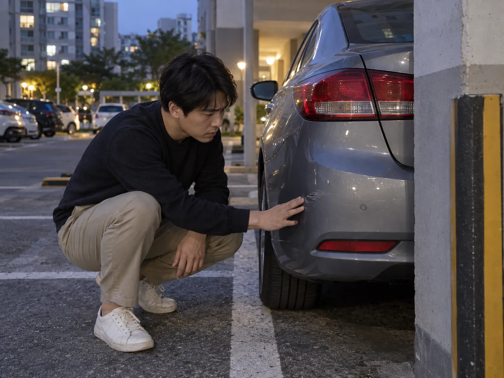
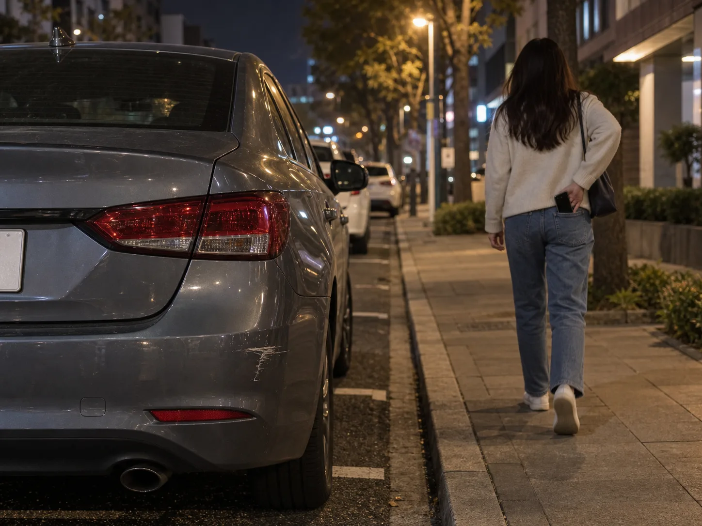
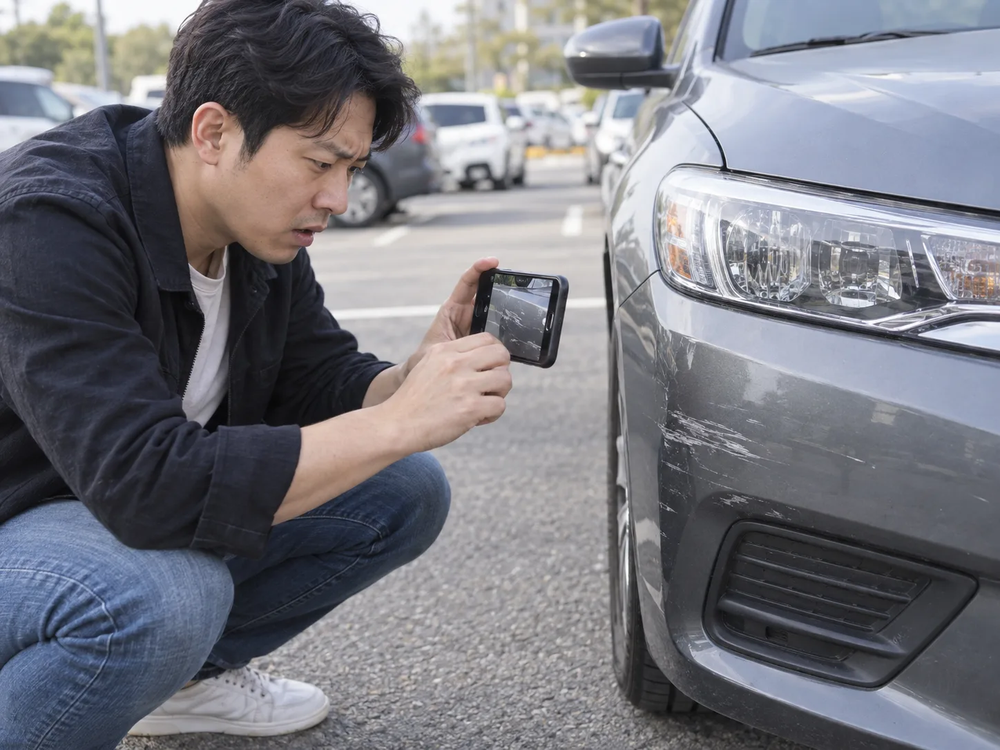
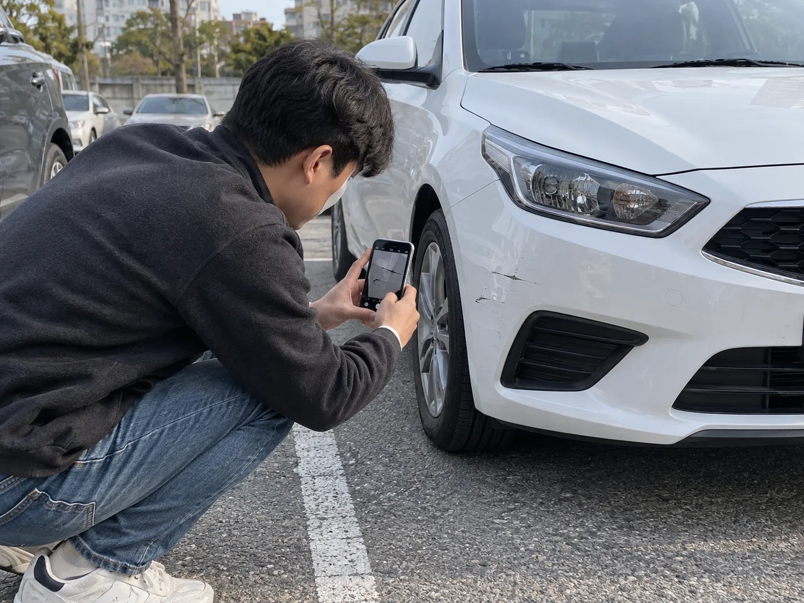

▲ 지하주차장 기둥에 살짝 스친 범퍼, 신고할지 말지는 여기서 갈린다
지하주차장 2층, 기둥 옆 좁은 구획. 30대 직장인 A씨는 카셰어링 앱으로 빌린 준중형 세단을 후진으로 밀어 넣다가 뒷범퍼 모서리를 콘크리트 기둥에 살짝 스쳤다. 차에서 내려 확인해보니 페인트가 얇게 긁힌 자국 정도, 손톱으로 눌러도 들어가지 않는 수준의 흠집이었다. "이 정도면 원래 있던 기스랑 구분도 안 되겠는데." A씨는 몇 초간 흠집을 들여다보다가, 신고 화면을 열지 않은 채 스마트폰을 주머니에 넣고 반납 버튼을 눌렀다.
여기까지는 흔한 장면이다. 문제는 이틀 뒤 벌어졌다.

▲ 신고하지 않고 그냥 반납하는 그 순간, 기록은 아무것도 남지 않는다
다음 이용자가 발견하는 순간, 상황은 A씨 손을 떠난다
같은 차량을 다음으로 예약한 이용자는 인수 전 점검 과정에서 뒷범퍼의 긁힌 자국을 발견했다. 카셰어링 앱은 차량을 인수할 때 기존 손상 여부를 사진으로 등록하도록 안내하는데, 이 단계에서 새로 생긴 흠집이 확인되면 그 즉시 운영사에 파손 신고가 접수된다. 운영사는 직전 이용 기록을 조회해 A씨의 예약 구간에서 손상이 발생했다고 특정하고, 차량손해 접수 절차를 시작한다. A씨가 반납 후 며칠이 지나 받은 것은 다름 아닌 수리비 청구 안내였다.
쏘카 등 카셰어링 업체는 사고·파손이 발생했을 때 즉시 또는 해당 예약 기간 중 앱의 사고 접수 기능이나 전화(쏘카 사고접수 1661-4977)로 신고하도록 안내하고 있다. 사고 접수 절차 확인 바로가기 문제는 A씨처럼 '이 정도는 괜찮겠지'라며 신고를 건너뛴 경우다.
면책금이 있어도 소용없다 — '미신고'는 보장 자체를 지운다
카셰어링 이용자는 예약 시 차량손해면책제도라는 보험성 상품에 가입한다. 사고가 나도 이 제도 덕분에 이용자는 정해진 자기부담금(면책금) 한도 안에서만 비용을 부담하면 된다. 쏘카 기준으로 자기부담금은 보장 상품에 따라 0원(완전보장)부터 최대 30만 원(표준보장), 최대 70만 원(실속보장) 수준으로 나뉜다. 차량손해면책제도 상품별 자기부담금 확인
그런데 이 면책 제도에는 전제 조건이 붙는다. 사고나 파손 사실을 정당한 이유 없이 즉시 또는 예약 기간 중 알리지 않았다면, 차량손해면책제도 적용 자체가 배제된다는 조항이다. 다시 말해 30만 원짜리 표준보장에 가입해 놓고도, 신고를 하지 않았다는 사실 하나 때문에 면책 한도가 통째로 사라지고 수리비 전액과 그 기간 동안 차량을 운행하지 못해 발생하는 휴차보상료까지 이용자가 그대로 떠안는 구조다. A씨가 받아든 청구서 금액이 '30만 원'이 아니라 범퍼 부분도색 실비 전체였던 이유가 여기에 있다.

▲ 다음 이용자의 인수 전 점검 사진 한 장이 직전 이용자의 책임 구간을 특정한다
2022년 약관 시정, 달라진 것과 달라지지 않은 것
사실 몇 년 전까지 쏘카 약관은 지금보다 훨씬 가혹했다. 사고나 파손을 신고하지 않으면 이유를 불문하고 페널티 요금 10만 원을 일률적으로 부과하는 조항이 있었다. 응급실에 실려가 신고할 겨를이 없었던 이용자에게까지 같은 페널티가 적용되자 공정거래위원회가 이 조항을 불공정 약관으로 판단했고, 2022년 9월 쏘카는 10만 원 페널티 조항 자체를 삭제했다. 한국일보 관련 기사 보기
다만 여기서 착각하기 쉬운 부분이 있다. 사라진 것은 '이유를 불문한 일률적 페널티 10만 원'이지, 미신고에 대한 불이익 자체가 사라진 것은 아니다. 개정된 약관은 '정당한 이유' 없이 알리지 않은 경우에 한해 면책 보장을 배제한다고 명시하고 있을 뿐이다. 즉 사고 직후 의식을 잃었거나 병원으로 이송되는 등 신고가 물리적으로 불가능했던 경우는 보호받을 여지가 생겼지만, A씨처럼 단순히 '귀찮아서', '별것 아니라고 생각해서' 신고하지 않은 경우는 여전히 '정당한 이유'로 인정받기 어렵다. 실제로 반납 후 몇 주가 지나 수리비 전액을 통보받았다는 이용자들의 사례는 지금도 온라인 커뮤니티에 꾸준히 올라온다.
구두 안내를 믿었다가 뒤집힌 사례도 있다
신고를 했다고 해서 항상 끝이 아니라는 점도 짚어둘 필요가 있다. 한 이용자는 사고 직후 운영사 사고관리팀과 통화하며 자기부담금 50만 원만 내면 된다는 안내를 받았지만, 2개월 뒤 신호위반 등 보험 처리 제외 사유가 확인됐다는 통보와 함께 수리비 350만 원 전액을 청구받은 사례가 보도된 바 있다. 면책 제도는 교통법규 위반 등 별도 면책 배제 사유가 있으면 신고 여부와 무관하게 적용되지 않을 수 있다는 뜻이다. 신고는 최소한의 전제조건일 뿐, 그 자체가 비용을 보장해주는 것은 아니라는 의미이기도 하다.
결국 원칙은 단순하다. 흠집의 크기와 무관하게, 눈에 띄는 손상이 생겼다면 반납 전 앱의 사고·파손 신고 기능으로 사진과 함께 즉시 접수하는 것이다. 신고 이력이 남아 있으면 이후 분쟁이 생기더라도 최소한 면책 한도 내에서 비용이 정리될 가능성이 남지만, 신고 자체가 없으면 다음 이용자가 흠집을 발견하는 순간부터 협상의 여지 없는 전액 청구서를 받아들 수밖에 없다.
억울하게 뒤집어쓰지 않으려면 — 인수 직후 촬영이 먼저다
지금까지는 '내가 낸 흠집을 신고하지 않았을 때'의 이야기지만, 반대 상황도 똑같이 흔하다. 이전 이용자가 미처 신고하지 않은 손상이 버젓이 남아 있는 차를 그대로 인수했다가, 반납 뒤 엉뚱하게 그 책임을 뒤집어쓰는 경우다. 카셰어링 앱은 인수 화면에서 차량 외관 사진을 등록하도록 안내하지만, 이 단계를 대충 넘기면 정작 필요할 때 아무 증거도 남지 않는다.
따라서 차량을 인수한 직후, 운전석에 앉기 전에 스마트폰으로 차량 네 면(전면·후면·좌측면·우측면)과 휠, 유리, 실내 매트·시트까지 밝은 곳에서 훑듯이 촬영해두는 습관이 중요하다. 이미 흠집이나 오염이 있다면 그 부분을 가까이서 한 번 더 찍고, 가능하면 앱의 인수 전 점검 사진 등록 기능에도 반드시 업로드해 시간이 기록되도록 남겨야 한다. 이렇게 인수 시점 사진이 확보되어 있으면, 훗날 다음 이용자가 같은 자리에서 손상을 발견해 신고하더라도 "그 흠집은 내가 인수하기 전부터 있었다"는 사실을 촬영 시각과 함께 즉시 소명할 수 있다. 반대로 이 기록이 없으면, 손상이 언제 생겼는지는 결국 운영사의 이용 기록 조회에 의존할 수밖에 없고 억울하게 직전 이용자로 특정될 여지가 남는다.

▲ 시동을 걸기 전, 기존 흠집부터 클로즈업으로 남겨두면 나중에 억울할 일이 없다
▲ 반납 며칠 뒤 도착하는 청구 안내, 신고 여부가 금액을 가른다